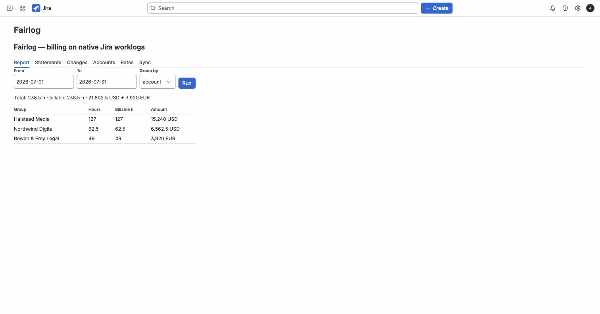

Fairlog is the billing layer for teams that invoice clients from Jira time: effective-dated rates, invoice-ready billing statements, and drift alerts when worklogs change after you've billed. Your data never leaves Atlassian.
Marketplace listing is in review — link goes live on approval. Free for teams up to 10 users.

Every block below answers a real complaint from public Marketplace reviews. We didn't invent the pain.
Rates are effective-dated: set a new rate from date X — past or future — and history stays priced as it was. Resolution: person-on-project → project → person → client.
"You cannot set global billing rates with a date associated to them… You cannot schedule it ahead or fix it in retrospect."A statement snapshots every line at issue time. Rate changes later? Your sent numbers don't move.
"Change the billing rate… without impacting the previous time entries or with an effective date? You can't."Pick a client and a period — download PDF (with your logo), XLSX or CSV. Excel optional.
"The creation of the invoice does not work within Tempo. We use exports and Excel."If a worklog changes after you've issued a statement — you'll know within 15 minutes: was/now diff and a one-click correction statement.
"The numbers don't add up" — the classic month-end mystery, solved.Time logged through Fairlog is written as the user — not as an app. Your JQL
(worklogAuthor = currentUser()), dashboards and gadgets just work.
Worklogs are Jira's. Billable and client marks live in worklog properties — inside Jira. Rates, accounts and statements export to CSV. Your time data was never ours to hold.
"You will lose the worklog author and worklog description upon uninstalling."Fairlog runs entirely on Atlassian infrastructure (Forge). No third-party servers, zero egress, data residency follows your Jira region automatically.
"Outage for over 22hrs, no communication."Rates and amounts are visible to admin/finance roles only. Managers see team hours; members see their own.
Enforced server-side — not hidden in the UI.One edition. No forced add-on suite, no per-module pricing.
Billing, refunds and licensing are handled by Atlassian Marketplace. Not a tax-invoice tool: Fairlog produces billing statements / invoice-ready reports for your accounting system.